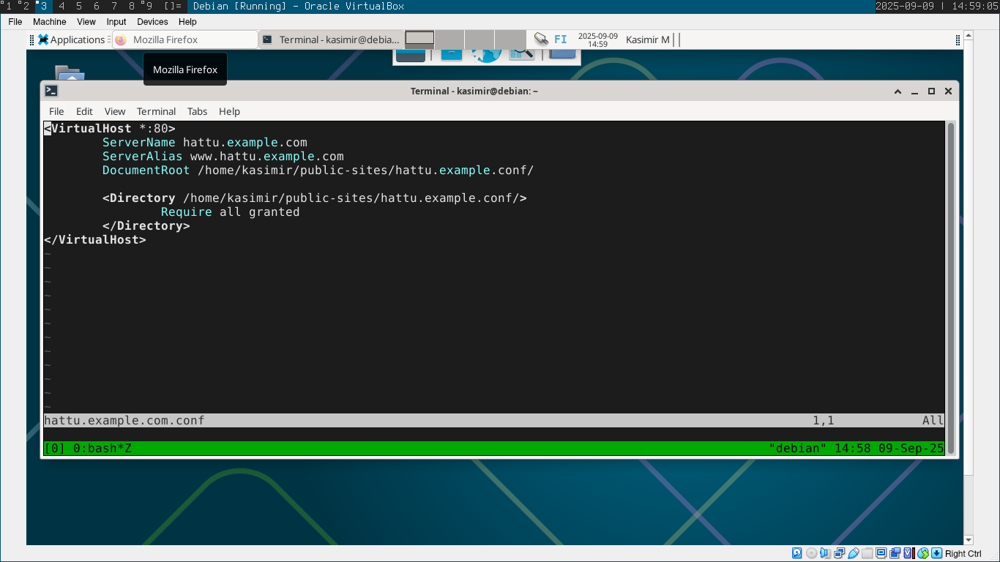
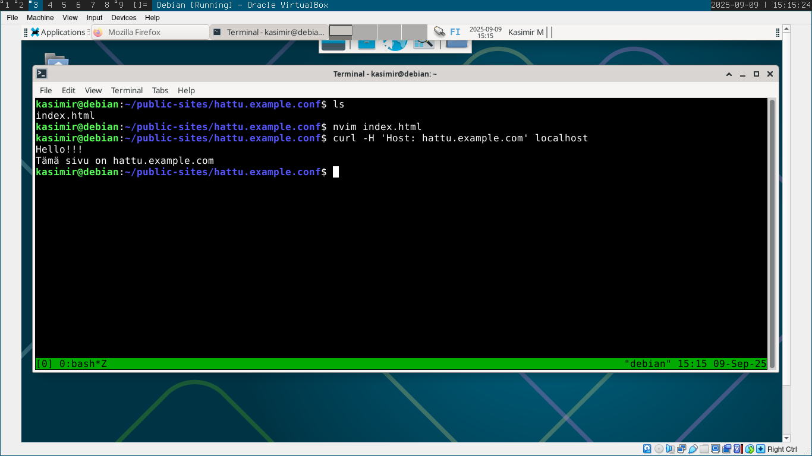
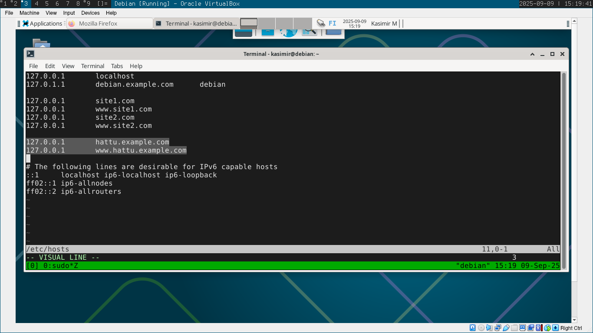
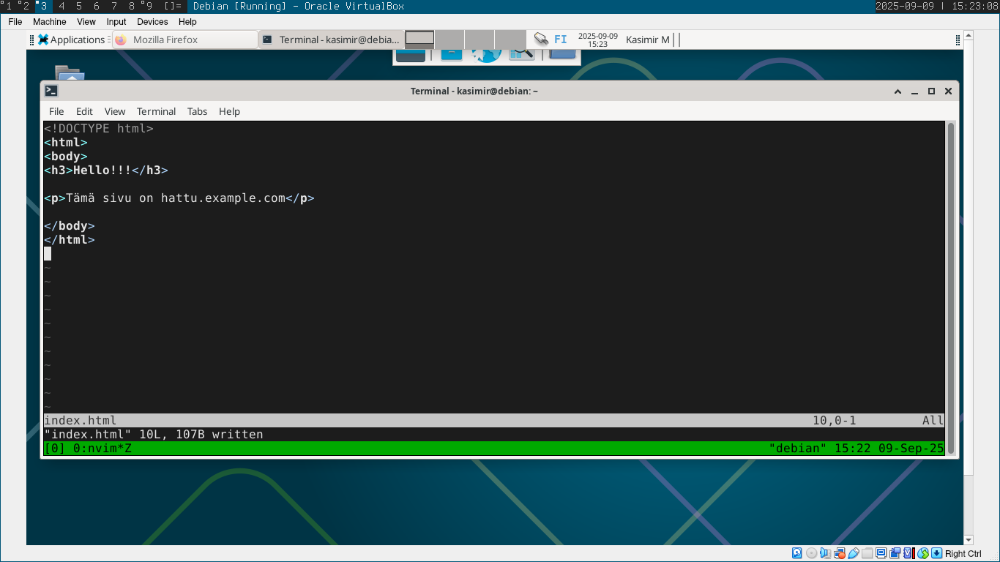
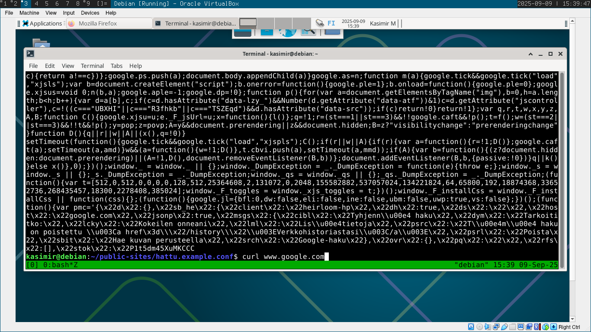

h3
x)
- Apachella voidaan hostata useampaa nettisivua samasta IP-osoitteesta eri domain-nimillä.
- On lisättävä VirtualHost -konfiguraatiotiedostoon:
<VirtualHost *:80>
ServerName www.example.com
ServerAlias example.com
DocumentRoot "/www/domain"
</VirtualHost>
a)
Testasin curl-komennolla että palvelin vastaa localhost -osoitteesta:
curl localhost
Hello!
b)
Avasin apachen lokitiedoston komennolla
sudo cat /var/log/apache/access.log
::1 - - [09/Sep/2025:14:22:27 +0300] "GET / HTTP/1.1" 200 232 "-" "curl/8.14.1"
Sisältö analysoituna:
Clientin IP-osoite: ::1
Aika: [09/Sep/2025:14:22:27 +0300]
Pyyntö: "GET / HTTP/1.1"
Statuskoodi: 200 (Success)
Vastauksen koko: 232
Clientin ohjelma: curl/8.14.1
c)
cd /etc/apache2/sites-available
sudo nvim hattu.example.conf
sudo a2ensite hattu.example.com
sudo systemctl reload apache2
cd /home/kasimir/public-sites/
mkdir hattu.example.com
cd hattu.example.com
nvim index.html
sudo nvim /etc/hosts
e)
nvim /home/kasimir/public-sites/index.html
Huomasin että nimesin kansiot nimellä "hattu.example.conf" enkä "hattu.example.com"... :) Minulla ei ollut aikaa korjata asiaa, toimi kuitenkin.
f)
Jostain syystä sain curl -l ja curl -komennoilla samat outputit kaikilla sivuilla joita testasin.
Lähteet:
Karvinen, Tero 2025 Tehtävänanto h3 https://terokarvinen.com/linux-palvelimet/
Karvinen, Tero 2018: Name Based Virtual Hosts on Apache – Multiple Websites to Single IP Address Linkki: https://terokarvinen.com/2018/04/10/name-based-virtual-hosts-on-apache-multiple-websites-to-single-ip-address/
Apache website, Name-based Virtual Host Support Linkki: https://httpd.apache.org/docs/2.4/vhosts/name-based.html
Last9 -blogi, Apache logs explained Linkki: https://last9.io/blog/apache-logs-explained/
Heinonen, Johanna 2025: Apache2 Linkki: https://github.com/johannaheinonen/johanna-test-repo/blob/main/linux-03092025.md